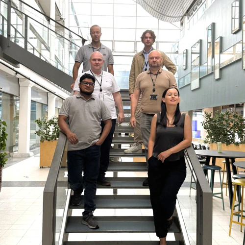
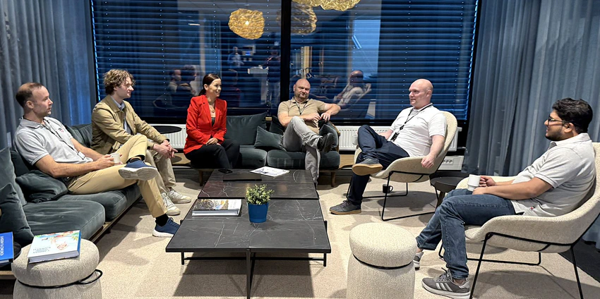

01
DNI IDM
Kontoer opprettes fra HR-systemet og skrives til Active Directory, Entra ID, Exchange eller Google Workspace. Regler for grupper og navn gjenbrukes på tvers av flyter.
Norsk programvarehus · Fornebu
DNI automatiserer oppretting og administrasjon av brukere, tilganger og Microsoft Teams — for kommuner og større virksomheter. Hver endring havner i revisjonsloggen.
ISO 27001 og ISO 9001 er under implementering.

Tall DNI oppgir selv på dni.no
01 Plattform
Identitet, tilgang, data og automasjon henger sammen. Ta i bruk det dere trenger nå, og bygg videre med mikrotjenester.
01
Kontoer opprettes fra HR-systemet og skrives til Active Directory, Entra ID, Exchange eller Google Workspace. Regler for grupper og navn gjenbrukes på tvers av flyter.
02
Ledere godkjenner tilgang for teamet sitt selv, uten IT-sak. Rollebaserte regler, egendefinerte godkjenningsløp og full sporbarhet.
03
Brukeren håndterer passordet sitt selv, med identitetsbekreftelse og reviderbare steg.
04
Kobler til datakilder på tvers av on-prem og sky, og deler bare feltene dere velger — via API-er som OData eller JSON.
05
Hendelsesdrevne flyter som holder rede på tilstanden til hvert enkelt element — med karantene når data forsvinner fra kilden.
06
Ferdige små apper bygget på DNI Cloud Platform, koblet til systemene dere allerede bruker.
02 Provisjonering
Velg antall kommuner, team og ansatte. Loggen viser hva en DNI-flyt gjør: henter fra HR, oppretter kontoer, tildeler grupper og setter opp team med kanaler.
Skisse Simuleringen kjører lokalt i nettleseren. Ingen data sendes, og ingenting lagres. Tallene regnes ut fra valgene dine — de er ikke kundetall.
03 Slik settes flyten opp
Flytbyggeren er laget for at en driftsavdeling skal kunne gjøre jobben selv, uten et utviklingsprosjekt.
01
HR-systemet kobles til via CSV, SQL, API eller webhook. Dere velger selv hvilke felt som skal hentes, og hvilke rader som er relevante.
02
Navn, e-post, avdeling og stilling mappes mot Active Directory, Entra ID, Exchange eller Google Workspace. Grupper og navnemaler gjenbrukes på tvers av flyter.
03
Flyten går on-demand, planlagt eller på hendelser fra HR, ERP eller sakssystem — med revisjonslogg på hver endring og karantene når kilden svikter.
04 Selskap
Dotnet Internals holder til på Fornebu, med ansatte på flere lokasjoner og kunder i fire land.
DNI ble bygget rundt én idé: at brukeradministrasjon skal skje av seg selv. Fra 2009 automatiserte On-prem LCS administrasjon og vedlikehold av Active Directory i norske virksomheter. I dag er DNI Cloud Platform en modulær plattform med over 50 mikrotjenester for identitet, tilgang, data og integrasjon.
Plattformen er bygget for å kunne tas i bruk stykkevis. Dere kan starte med én flyt fra HR til Active Directory, og legge til tilgangsstyring, datadeling og Teams-automatisering etter hvert som behovet melder seg.
05 Kunder
Betrodd av organisasjoner som håndterer tusenvis av brukere og millioner av transaksjoner.
Med løsninger fra DNI har vi automatisert opprettelsen og administrasjonen av Microsoft Teams for våre 3 kommuner.
DNI Cloud Platform passer oss perfekt med sin åpne løsning hvor vi trygt og enkelt kan sette opp og konfigurere løsningen slik vi ønsker det.
06 Kontakt
Fortell oss hvilke systemer som er i spill, og hvor mange brukere det gjelder. Vi svarer med en konkret flyt — ikke en brosjyre.
